Engine loop candidates
GH-35: vehicles are silent. Two candidates for each engine sound, for your ear. Nothing here is wired into the game; the one you pick moves into gen_audio.py unchanged.
Each file is a seamless 8 s loop, so let it play round a few times (the players loop). A browser's <audio loop> can leave a hair of a gap at the wrap; the game would loop it sample-exact. Engines and rotors are normalised to -24 LUFS and the track layer to -27, so you compare character, not volume. In the game they would sit about 12 LU under the combat sound and come and go with speed, distance and the four-vehicle cap. Synthesised, CC0, byte-identical on every run of engine_candidates.py.
What to listen for
You switched the ambience off for whining (#483). The check on this page looks for the kind of whine that can be measured: a narrow tone that holds. It finds none in the three beds above 200 Hz (see the bottom of the page). The one steady tone in them is the town bed's generator: a 50 Hz hum and the 38 Hz chug beside it, +11 dB, all the way round the loop. So if it was that hum, listen hard to the low note here: every engine has one, steadier and stronger (+20 to +29 dB), because it is the engine. If it was the wind rising and falling, two candidates carry a slow swell (tracked idle B's fan, wheeled moving A's wind).
Verdicts
| Candidate | Family | LUFS | True peak | Seam | Whine check, 1x and 1.2x | Low note (not gated) | Verdict |
|---|---|---|---|---|---|---|---|
| tracked_idle_a_v12 | tracked heavy, idle | -24.0 | -10.1 dBTP | 0.995 | no whine (longest tone 0.09 s); no whine (longest tone 0.09 s) | low note 64 Hz held 8.0 s, +29 dB | PASS |
| tracked_idle_b_lumpy | tracked heavy, idle | -24.0 | -8.2 dBTP | 0.996 | no whine (longest tone 0.09 s); no whine (longest tone 0.12 s) | low note 40 Hz held 8.0 s, +24 dB | PASS |
| tracked_move_a_pulling | tracked heavy, moving | -24.0 | -8.8 dBTP | 0.996 | no whine (longest tone 0.12 s); no whine (longest tone 0.09 s) | low note 105 Hz held 8.0 s, +21 dB | PASS |
| tracked_move_b_low_gear | tracked heavy, moving | -24.0 | -7.9 dBTP | 0.994 | no whine (longest tone 0.09 s); no whine (longest tone 0.12 s) | low note 78 Hz held 8.0 s, +23 dB | PASS |
| track_clank_a_sprocket | track clank layer | -27.0 | -8.8 dBTP | 0.988 | no whine (longest tone 0.14 s); no whine (longest tone 0.12 s) | low note 54 Hz held 1.9 s, +10 dB | PASS |
| track_clank_b_slack | track clank layer | -27.0 | -8.8 dBTP | 0.963 | no whine (longest tone 0.07 s); no whine (longest tone 0.12 s) | low note 65 Hz held 1.9 s, +8 dB | PASS |
| wheeled_idle_a_petrol | wheeled, idle | -24.0 | -7.2 dBTP | 0.995 | no whine (longest tone 0.09 s); no whine (longest tone 0.12 s) | low note 81 Hz held 8.0 s, +20 dB | PASS |
| wheeled_idle_b_diesel | wheeled, idle | -24.0 | -7.9 dBTP | 0.996 | no whine (longest tone 0.09 s); no whine (longest tone 0.05 s) | low note 75 Hz held 8.0 s, +23 dB | PASS |
| wheeled_move_a_cruise | wheeled, moving | -24.0 | -9.5 dBTP | 0.996 | no whine (longest tone 0.07 s); no whine (longest tone 0.12 s) | low note 70 Hz held 8.0 s, +25 dB | PASS |
| wheeled_move_b_gravel | wheeled, moving | -24.0 | -8.9 dBTP | 0.997 | no whine (longest tone 0.07 s); no whine (longest tone 0.09 s) | low note 56 Hz held 8.0 s, +24 dB | PASS |
| rotor_a_blade_slap | rotor (optional) | -24.0 | -8.0 dBTP | 0.994 | no whine (longest tone 0.14 s); no whine (longest tone 0.09 s) | low note 39 Hz held 8.0 s, +29 dB | PASS |
| rotor_b_overhead | rotor (optional) | -24.0 | -6.9 dBTP | 0.999 | no whine (longest tone 0.12 s); no whine (longest tone 0.07 s) | low note 64 Hz held 0.4 s, +8 dB | PASS |
Tracked heavy, idle
tracked_idle_a_v12 — V12 at idle
650 rpm, twelve cylinders, so a 65 Hz firing note lopes at the 5.4 Hz engine cycle; a deep exhaust pulsing with it and a soft breath of the cooling air. Steady, heavy, unhurried.
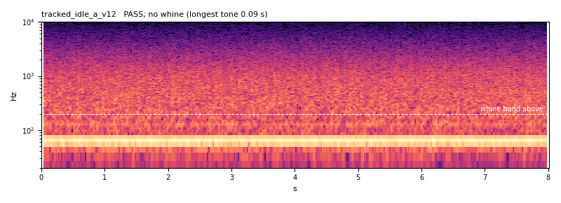
PASS · -24.0 LUFS · true peak -10.1 dBTP · seam 0.995 (an ordinary junction inside the file reads 0.997) · no whine (longest tone 0.09 s); at 1.2x no whine (longest tone 0.09 s) · low note 64 Hz held 8.0 s, +29 dB
tracked_idle_b_lumpy — Lumpy and lower
a slower, rougher idle -- 40 Hz firing with a big cylinder-to-cylinder spread, so it chugs at 5 Hz -- with a heavier exhaust and a cooling-fan rush that swells and settles twice a loop.
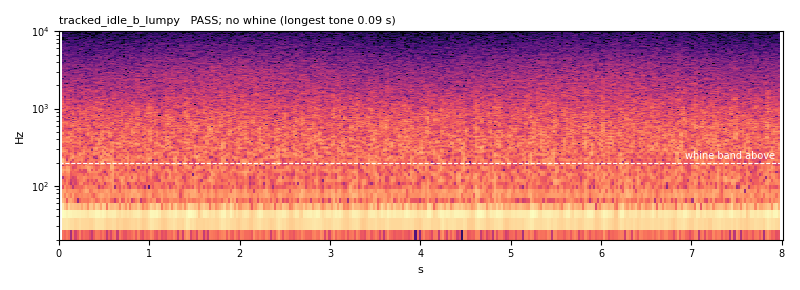
PASS · -24.0 LUFS · true peak -8.2 dBTP · seam 0.996 (an ordinary junction inside the file reads 0.997) · no whine (longest tone 0.09 s); at 1.2x no whine (longest tone 0.12 s) · low note 40 Hz held 8.0 s, +24 dB
Tracked heavy, moving
tracked_move_a_pulling — Pulling
the same V12 under load, 105 Hz firing, its harder pulses driving a broad intake roar; a slow surge as the driver works the throttle. The pitch is still under 150 Hz; the weight is in the roar.
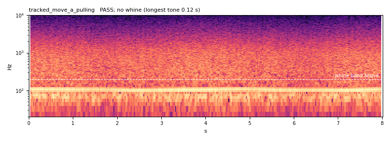
PASS · -24.0 LUFS · true peak -8.8 dBTP · seam 0.996 (an ordinary junction inside the file reads 0.997) · no whine (longest tone 0.12 s); at 1.2x no whine (longest tone 0.09 s) · low note 105 Hz held 8.0 s, +21 dB
tracked_move_b_low_gear — Low gear, labouring
80 Hz firing, heavy and uneven -- big pulse-to- pulse spread, a lug twice a second as the load comes on and off -- with a darker roar. A tank climbing, not cruising.
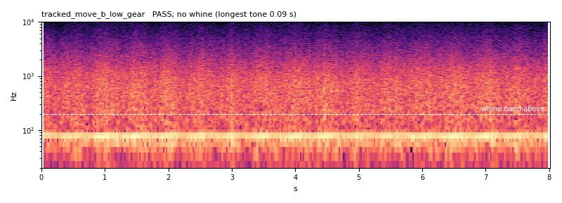
PASS · -24.0 LUFS · true peak -7.9 dBTP · seam 0.994 (an ordinary junction inside the file reads 0.997) · no whine (longest tone 0.09 s); at 1.2x no whine (longest tone 0.12 s) · low note 78 Hz held 8.0 s, +23 dB
Track clank layer
track_clank_a_sprocket — Links on the sprocket
11 link strikes a second, every fourth one a road wheel landing on a pin (heavier, lower), over the rumble of the road wheels on the ground. Dry and mechanical.
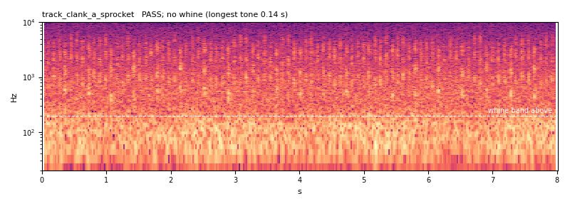
PASS · -27.0 LUFS · true peak -8.8 dBTP · seam 0.988 (an ordinary junction inside the file reads 0.978) · no whine (longest tone 0.14 s); at 1.2x no whine (longest tone 0.12 s) · low note 54 Hz held 1.9 s, +10 dB
track_clank_b_slack — Slack track
two tracks a beat apart (15 and 14 strikes a second), lighter, rattling links with a high jingle of pins, over a softer rumble. Busier and thinner than A: lighter armour, or a faster pace.
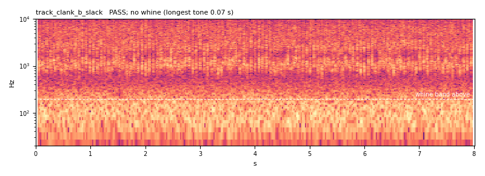
PASS · -27.0 LUFS · true peak -8.8 dBTP · seam 0.963 (an ordinary junction inside the file reads 0.958) · no whine (longest tone 0.07 s); at 1.2x no whine (longest tone 0.12 s) · low note 65 Hz held 1.9 s, +8 dB
Wheeled, idle
wheeled_idle_a_petrol — Petrol four at idle
800 rpm, 27 Hz firing, smooth and light, a tailpipe puttering with it, the tick of the valve train over it.
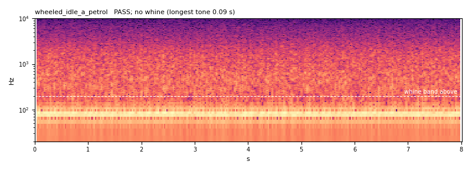
PASS · -24.0 LUFS · true peak -7.2 dBTP · seam 0.995 (an ordinary junction inside the file reads 0.996) · no whine (longest tone 0.09 s); at 1.2x no whine (longest tone 0.12 s) · low note 81 Hz held 8.0 s, +20 dB
wheeled_idle_b_diesel — Diesel clatter
a four-cylinder diesel at 750 rpm (the technical's pickup), 25 Hz firing with the hard knock of injection on every pulse -- the rattle a Hilux makes at a checkpoint.
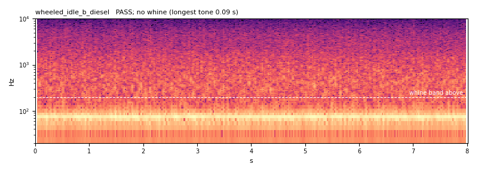
PASS · -24.0 LUFS · true peak -7.9 dBTP · seam 0.996 (an ordinary junction inside the file reads 0.994) · no whine (longest tone 0.09 s); at 1.2x no whine (longest tone 0.05 s) · low note 75 Hz held 8.0 s, +23 dB
Wheeled, moving
wheeled_move_a_cruise — Cruise
70 Hz firing at a steady road speed, tyre roar and a little wind round the cab. Smooth, level, a car-sized engine.
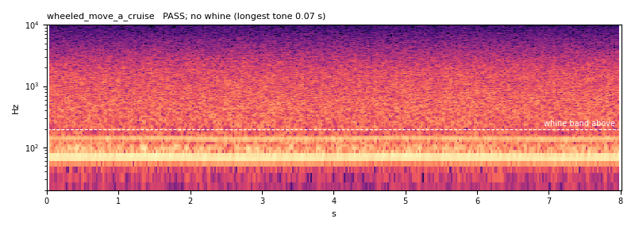
PASS · -24.0 LUFS · true peak -9.5 dBTP · seam 0.996 (an ordinary junction inside the file reads 0.997) · no whine (longest tone 0.07 s); at 1.2x no whine (longest tone 0.12 s) · low note 70 Hz held 8.0 s, +25 dB
wheeled_move_b_gravel — Off the road
55 Hz firing under load, on gravel -- a dense crunch under the tyres and the suspension knocking over ruts four times a loop.
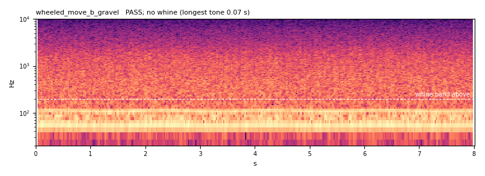
PASS · -24.0 LUFS · true peak -8.9 dBTP · seam 0.997 (an ordinary junction inside the file reads 0.997) · no whine (longest tone 0.07 s); at 1.2x no whine (longest tone 0.09 s) · low note 56 Hz held 8.0 s, +24 dB
Rotor (optional)
rotor_a_blade_slap — Blade slap
a four-blade main rotor (19 passes a second) slapping, with the tail rotor's buzz over it and turbine hiss on top. Close by.
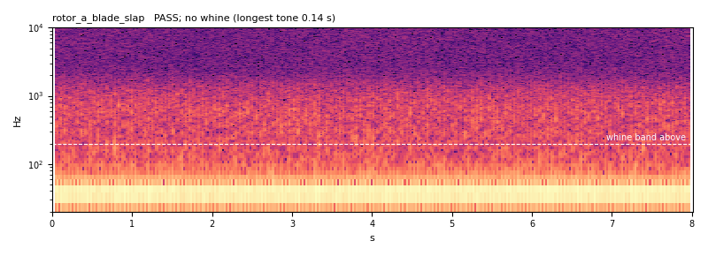
PASS · -24.0 LUFS · true peak -8.0 dBTP · seam 0.994 (an ordinary junction inside the file reads 0.992) · no whine (longest tone 0.14 s); at 1.2x no whine (longest tone 0.09 s) · low note 39 Hz held 8.0 s, +29 dB
rotor_b_overhead — Overhead, further off
the same rotor heard from a few hundred metres -- the slap rounded to a beat, the highs gone, more of the air it moves, a slow swell as the wind carries it.
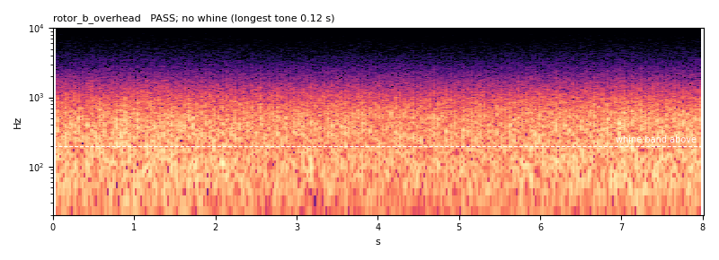
PASS · -24.0 LUFS · true peak -6.9 dBTP · seam 0.999 (an ordinary junction inside the file reads 0.998) · no whine (longest tone 0.12 s); at 1.2x no whine (longest tone 0.07 s) · low note 64 Hz held 0.4 s, +8 dB
How it was checked
Whine. A spectral peak 10 dB or more above the median of the ±161 Hz around it, between 200 Hz and 8 kHz, that holds 1 s or longer, read at normal speed and at 1.2x (the fastest the game would play a moving loop). Under 200 Hz a steady pitch is the engine's own note, so every candidate keeps its pitched part there and builds everything above it from noise; that low note is printed, not gated. On a spectrogram the dashed line is the band's floor and a held tone would be drawn in cyan. None is.
Level. Integrated loudness by ITU-R BS.1770-4, measured here and checked against ffmpeg's own meter on every file; true peak at 4x oversampling. Seam. The spectral shape of the last and first 250 ms must correlate 0.9 or better, the sample step across the wrap must be no bigger than any step inside the file, and the 250 ms either side must sit within 2 dB (validate:audio's own bed check).
Each check was first shown an input built to fail it:
- K-weighting = BS.1770-4 table at 48 kHz: max coefficient error 8.9e-16 ✓
- 997 Hz sine at -20 dBFS meters -23.01 LUFS: -23.01 LUFS ✓
- same, then 5 s at -40 dBFS: gated out, -23.14: -23.14 LUFS ✓
- fs/4 sine, 45 deg off crest: 0.0 dBTP: +0.02 dBTP (sample peak -3.01) ✓
- pure 440 Hz tone, 3 s: WHINE: 440 Hz for 2.93 s, 71 dB over its neighbours ✓
- 440 Hz 3 s under pink noise: WHINE: 440 Hz for 2.93 s, 13 dB ✓
- 440 Hz for 0.4 s in pink noise: clean: longest 0.46 s ✓
- white noise: clean: longest 0.09 s ✓
- pink noise: clean: longest 0.09 s ✓
- loop that starts dark and ends bright: seam FAILS: corr -0.91, step 0.27 dB ✓
- loop whose ends do not meet: seam FAILS: click 4.2x ✓
- periodic noise loop: seam passes: corr 0.996, click 0.29x, step 0.25 dB ✓
The same whine check on the three ambience beds you switched off (#483):